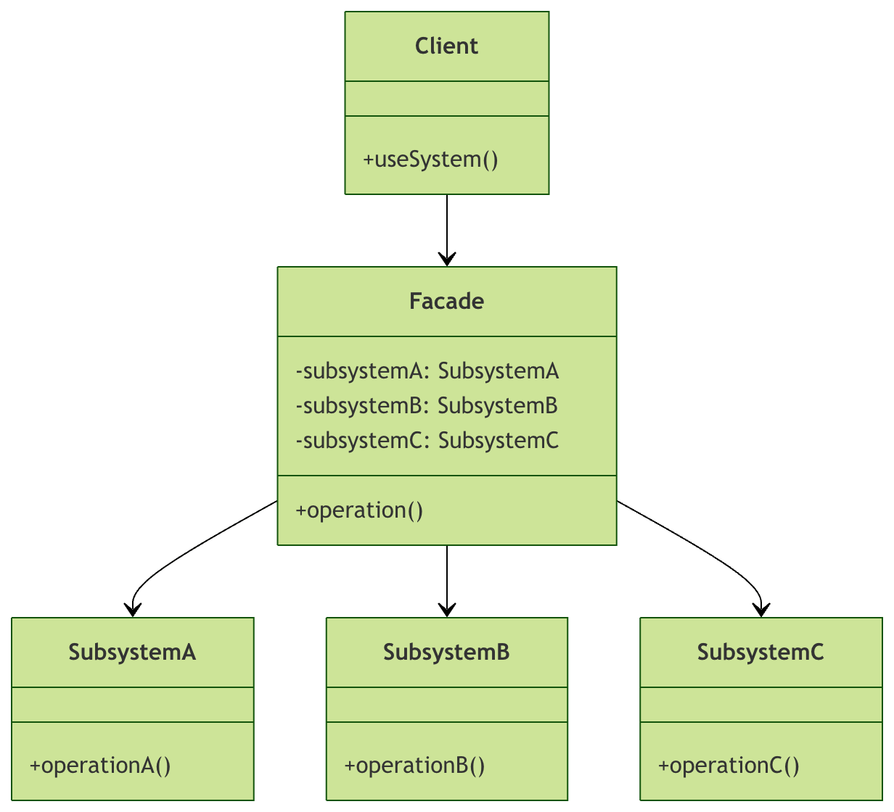

Python ファサードパターン
ファサードパターン（Facade Pattern）は構造型デザインパターンの一つで、複雑なサブシステムに対して簡素化されたインターフェースを提供します。レストランで食事をする場面を想像してみてください。厨房でシェフがどのように食材を切り、炒め、盛り付けをするかという詳細をすべて理解する必要はなく、ウェイターに食べたいものを伝えるだけで、ウェイターがキッチンと連携してすべての作業を進めてくれます。このウェイターが「ファサード」の役割を果たしています。
ソフトウェア開発において、ファサードパターンは統一されたインターフェースを作成することでサブシステムの複雑さを隠し、クライアントコードをより使いやすくします。
ファサードパターンの核となる考え方
複雑なシステムを簡素化する
システムが複雑になるにつれて、クラス間の依存関係も複雑に絡み合います。ファサードパターンは高レベルのインターフェースを提供することで、システムとクライアント間の結合度を下げます。
統一された入口を提供する
ファサードクラスはサブシステムへの唯一の入口として機能し、クライアントはファサードクラスとやり取りするだけでよく、サブシステム内部の複雑な構造を理解する必要はありません。
使用のハードルを下げる
システムの内部構造に詳しくない開発者にとって、ファサードパターンはシステム機能をすぐに使い始めることを可能にします。
ファサードパターンの構造

図からわかるように：
- Client（クライアント）：ファサードクラスを使用するコード
- Facade（ファサードクラス）：簡素化されたインターフェースを提供し、各サブシステムを調整する
- Subsystem（サブシステムクラス）：具体的な機能を実装するクラス
実際の応用例：ホームシアターシステム
ホームシアターの例を通して、ファサードパターンの実際の応用を理解しましょう。
サブシステムクラス
まず、ホームシアター内の各デバイスクラスを作成します：
例
"""アンプクラス"""
def on(self):
print("アンプをオンにしました")
def set_volume(self, level):
print(f"音量を {level} に設定しました")
def off(self):
print("アンプをオフにしました")
class DVDPlayer:
"""DVDプレーヤークラス"""
def on(self):
print("DVDプレーヤーをオンにしました")
def play(self, movie):
print(f"映画の再生を開始: {movie}")
def stop(self):
print("DVDプレーヤーを停止しました")
def off(self):
print("DVDプレーヤーをオフにしました")
class Projector:
"""プロジェクタークラス"""
def on(self):
print("プロジェクターをオンにしました")
def set_input(self, source):
print(f"プロジェクターの入力ソースを設定: {source}")
def off(self):
print("プロジェクターをオフにしました")
class Lights:
"""照明クラス"""
def dim(self, level):
print(f"照明を {level}% に暗くしました")
def on(self):
print("照明を全点灯しました")
class Screen:
"""スクリーンクラス"""
def down(self):
print("スクリーンを降ろしました")
def up(self):
print("スクリーンを上げました")
ファサードクラス
次に、すべてのデバイスの複雑な操作をカプセル化するファサードクラスを作成します：
例
"""ホームシアターファサードクラス"""
def __init__(self):
self.amplifier = Amplifier()
self.dvd_player = DVDPlayer()
self.projector = Projector()
self.lights = Lights()
self.screen = Screen()
def watch_movie(self, movie):
"""映画を観る - ワンタッチですべての準備を完了"""
print("\n=== ホームシアターモードを開始 ===")
# 正しい順序でデバイスを起動
self.lights.dim(10) # 照明を暗くする
self.screen.down() # スクリーンを降ろす
self.projector.on() # プロジェクターをオンにする
self.projector.set_input("DVD")
self.amplifier.on() # アンプをオンにする
self.amplifier.set_volume(5) # 音量を設定する
self.dvd_player.on() # DVDプレーヤーをオンにする
self.dvd_player.play(movie) # 映画を再生する
print(=== ホームシアターの準備が完了しました ===\n")
def end_movie(self):
"""映画の鑑賞終了 - ワンタッチですべてのデバイスをオフ"""
print("\n=== ホームシアターモードを終了 === ")
# 正しい順序でデバイスをオフにする
self.dvd_player.stop() # DVDを停止する
self.dvd_player.off() # DVDをオフにする
self.amplifier.off() # アンプをオフにする
self.projector.off() # プロジェクターをオフにする
self.screen.up() # スクリーンを上げる
self.lights.on() # 照明をオンにする
print("=== すべてのデバイスがオフになりました ===\n")
クライアントコード
では、クライアントがこの簡素化されたインターフェースをどのように使用するかを見てみましょう：
例
# ホームシアターファサードのインスタンスを作成
home_theater = HomeTheaterFacade()
# 映画を観る - メソッドを1つ呼び出すだけ！
home_theater.watch_movie("アバター")
# 鑑賞プロセスをシミュレート...
print("映画の時間を楽しんでいます...\n")
# 鑑賞終了 - こちらもメソッドを1つ呼び出すだけ！
home_theater.end_movie()
if __name__ == "__main__":
main()
実行結果：
=== 开始家庭影院模式 === 灯光调暗到 10% 屏幕已降下 投影仪已开启 投影仪输入源设置为: DVD 功放已开启 音量设置为 5 DVD播放器已开启 开始播放电影: 阿凡达 === 家庭影院准备就绪 === 正在享受电影时光... === 结束家庭影院模式 === DVD播放器已停止 DVD播放器已关闭 功放已关闭 投影仪已关闭 屏幕已升起 灯光全开 === 所有设备已关闭 ===
ファサードパターンの利点
1. クライアントコードを簡素化する
例
例
def watch_movie_manual():
lights = Lights()
screen = Screen()
projector = Projector()
amplifier = Amplifier()
dvd_player = DVDPlayer()
lights.dim(10)
screen.down()
projector.on()
projector.set_input("DVD")
amplifier.on()
amplifier.set_volume(5)
dvd_player.on()
dvd_player.play(# ファサードパターン使用 - 簡素化されたクライアントコード)
"アバター"
def watch_movie_simple():
home_theater = HomeTheaterFacade()
home_theater.watch_movie(2. 結合度を下げる)
2. 結合度を下げる
3. コードの保守性を高める
3. コードの保守性を高める
さらなる実用的な適用シーン
さらなる実用的な適用シーン
シーン1：データベース操作のファサード
例
"""クエリを実行するための簡素化されたインターフェース"""
def __init__(self, connection_string):
self.connection_string = connection_string
def execute_query(self, query, params=None):
# データベースに接続
# クエリを実行
connection = self._connect()
cursor = connection.cursor()
try:
# 結果を取得
if params:
cursor.execute(query, params)
else:
cursor.execute(query)
"クエリの実行に失敗しました: {e}"
result = cursor.fetchall()
return result
except Exception as e:
print(f# 接続を閉じる)
return None
finally:
"""内部接続メソッド - クライアントから隠蔽"""
cursor.close()
connection.close()
def _connect(self):
# 実際のデータベース接続ロジック
"データベースに接続しています..."
print("データベース接続をシミュレート")
return シーン2：ファイル処理のファサード
シーン2：ファイル処理のファサード
例
"""ファイルを処理するための簡素化されたインターフェース"""
def process_file(self, file_path):
# ファイルを検証
try:
# ファイルを読み込む
if not self._validate_file(file_path):
return False
# 内容を処理
content = self._read_file(file_path)
# 結果を保存
processed_content = self._process_content(content)
"ファイル処理に失敗しました: {e}"
self._save_result(processed_content)
return True
except Exception as e:
print(f"""ファイルを検証""")
return False
def _validate_file(self, file_path):
"ファイルを検証: {file_path}"
print(f"""ファイルを読み込む""")
return True
def _read_file(self, file_path):
"ファイルを読み込み: {file_path}"
print(f"ファイルの内容")
return """内容を処理"""
def _process_content(self, content):
"ファイルの内容を処理しています..."
print("処理後の内容")
return """結果を保存"""
def _save_result(self, content):
"処理結果を保存しています..."
print(ファサードパターンのベストプラクティス)
ファサードパターンのベストプラクティス
1. インターフェースを適切に設計する
2. 単一責任を保つ
2. 単一責任を保つ
3. 使いすぎないようにする
3. 使いすぎないようにする
4. 拡張性を考慮する
4. 拡張性を考慮する
実践演習
実践演習
演習1：ホームシアターシステムを改善する
演習1：ホームシアターシステムを改善する
ためにHomeTheaterFacadeメソッド：音響システムだけをオンにして音楽を聴く
listen_to_music(song)メソッド：ゲームモードをオンにする（異なるデバイス設定が必要な場合があります）play_game(game)方法：ゲームモードをオンにする（デバイス構成が異なる場合があります）
演習2：ECサイトの注文処理ファサードを作成する
ECシステムの注文処理ファサードを設計し、以下のサブシステムを含める：
- 在庫確認
- 支付处理 → 支払い処理
- 物流手配
- 邮件通知 → メール通知
演習3：デバッグのテクニック
ファサードクラスにログ機能を追加し、各メソッドの呼び出し時刻とパラメータを記録して、デバッグを容易にする。
まとめ
ファサードパターンは、簡素化されたインターフェースを提供することでシステムの複雑さを隠す強力なツールです。レストランのウェイターのように、ファサードクラスはクライアントとサブシステムの仲介役として機能し、複雑なシステムの使用をシンプルかつ直感的にします。
关键要点： → 重要なポイント：
- ファサードパターンはシステムの使用複雑度を低減します
- コードの保守性と可読性を向上させます
- クライアントとサブシステム間の結合を減らします
- 複雑なシステムや簡素化されたAPIを提供する必要があるライブラリに特に適しています